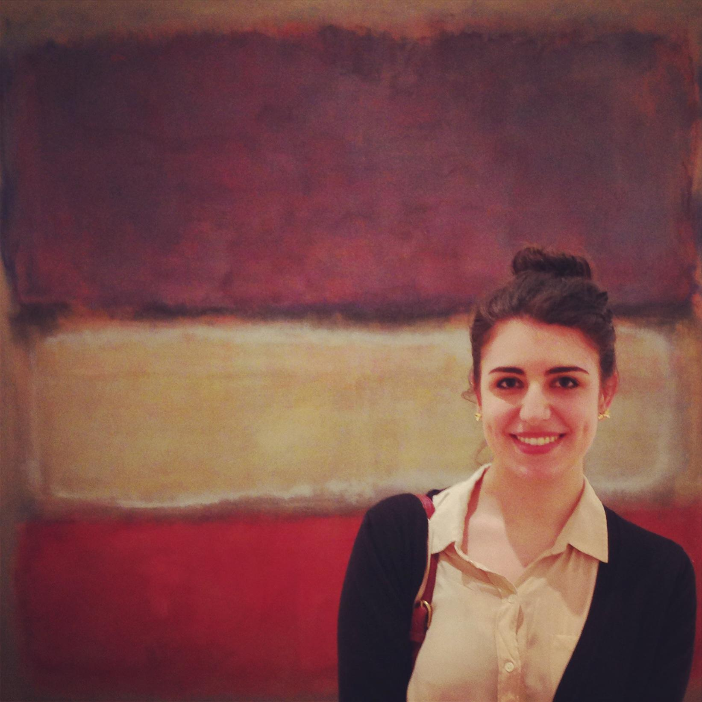

<link rel="stylesheet" type="text/css" href="CVstyle.css">


<header>
<center>



<h1> Alicia Caticha </h1>
<h2> PhD Candidate, History of Art and Architecture </h2>
<h2> McIntire Department of Art, University of Virginia </h2>

</header>

</center>

<section id="bio">
  <p>
Alicia is a doctoral candidate studying eighteenth- and
nineteenth-century European art and material culture with
Professor Sarah Betzer. Her dissertation, "Étienne-Maurice
Falconet and the Matter of
Sculpture: Marble, Porcelain, and Sugar in Eighteenth-Century
Paris" poses the Academic sculptor as a nexus between Enlightenment
aesthetic theory and the mass production of sculpture during the burgeoining
consumer culture of the 1760s. Her research aims to explore
the intersections between the fine arts and decorative arts,
sculpture's relationship to a broadening global economy, questions
about ephemerality and the biography of objects.
</p>
<p>
Alicia is currently a Praxis fellow in the Digital Humanities
during the Academic year of 2016-2017. During the summer of
2016 she studied at the Andrew W. Mellon funded Summer
Institute in Technical Art History hosted by the NYU Institute
of Fine Arts. She has served as a teaching assistant for
"History of Western Art II," "Paris: Capitol of the Nineteenth
Century," "Art and Popular Culture," and "Art and Culture
of the American Slave South."
</p>
<p>
Alicia came to the University of Virginia from New York
University where she graduated in May 2012 with high
honors. Her undergraduate thesis "Notre-Dame de Paris:
Iconoclasm, Spoliation, and Sign Transformation in
Revolutionary Frane," was the recipient of the Dean's
Undergraduate Research Grant.
</p>
<p>
Alicia can be contacted by <a href="mailto:ac6cw@virginia.edu">email</a>
or by mail at  P.O. Box 40013 Charlottesville, Virginia 22904.
</p>
</section>

<section id="navigation">

<p class="links"> <a href="Education.html"> Education </a></p>

<p class="links"> <a href="grants_fellowships.html"> Grants, Fellowships, and Awards </a> </p>

<p class="links"> <a href="conferencepapers.html"> Conference Papers </a> </p>

<p class="links"> <a href="professionalexperience.html"> Professional Experience </a> </p>

<p class="links"> <a href="worksinprogress.html"> Works in Progress </a> </p>

<p class="links"> <a href="publications.html"> Publications </a> </p>

<p class="links"> <a href="languages.html"> Languages </a> </p>

<p class="links"> <a href="departmentalservice.html"> Departmental Service </a> </p>
</section>
